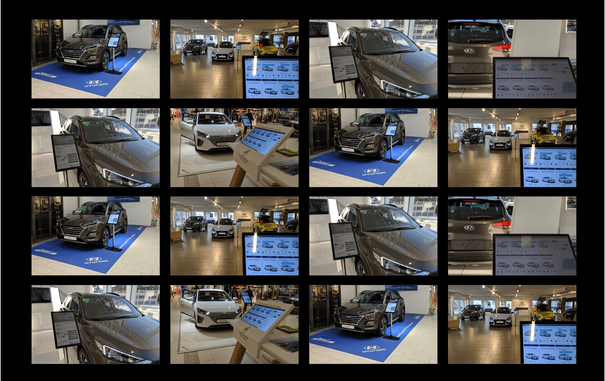
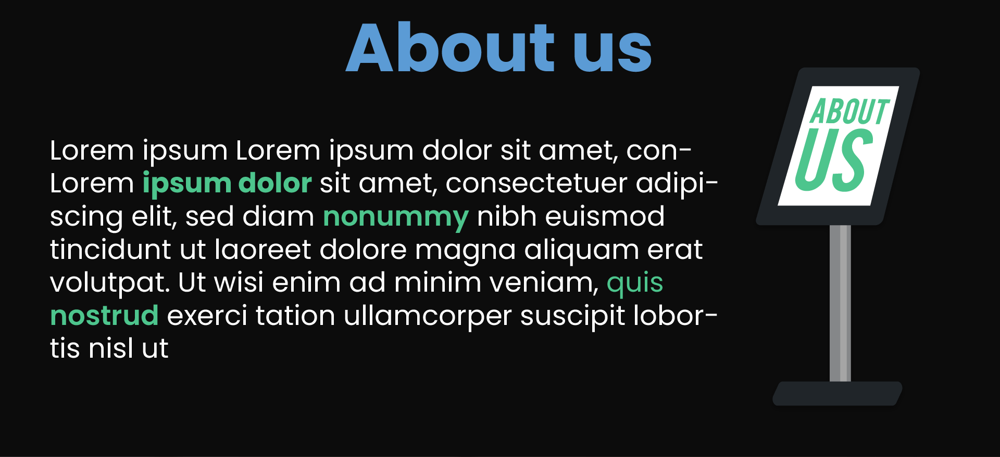
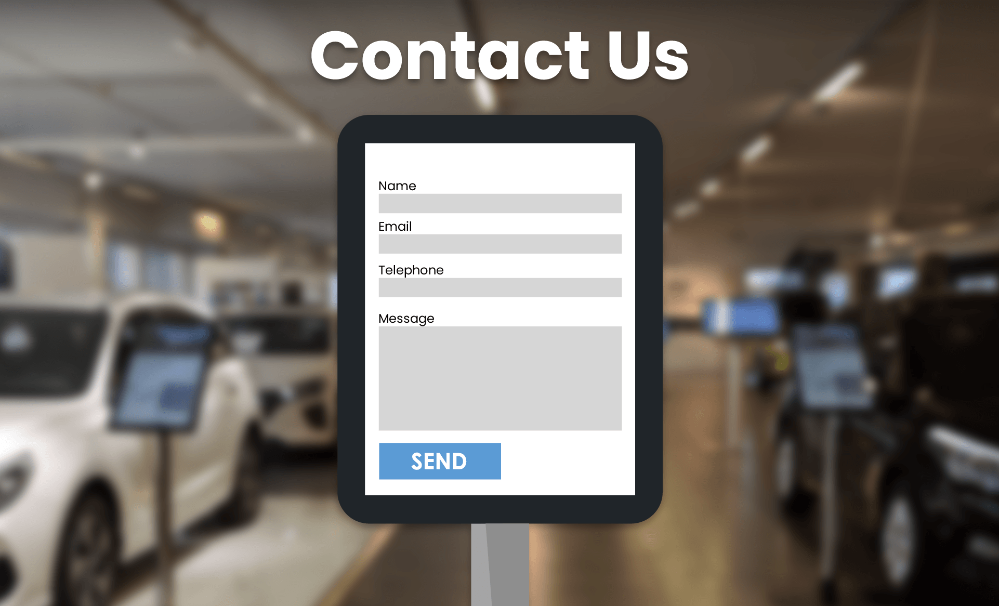

Our Client
Our Client
 Content
Content
Front Page
The front page will consist of background image or video, logo, navBurger(navbar/hamburger; conditional = desktop or mobile) and a centered text element, with three USP(unique selling points) bullet points. We want to grab the customers attention upon arriving on the site, and immediatly sell the product. In this section we want to use the following technologies and features:To see the full site in one pdf, click the icon below:

- General features
- Javascript
- Parallax
- For Desktop:
- Horizontal navbar, sticky when scrolling down
- Logo left side.
- Background video
- Video displaying the product/service our client is offering.
- Short statement that sums up the value offering of the product/service of our client.
- Three USP bullet points stating unique selling points with our clients product and services.
- Contact us logo/icon sticky and floating in the lower right side of the screen.
- For Mobile:
- Collapsed hamburger top right side.
- Background image displaying the product/service our client is offering.
- Centered text, top 30% with 3 USP bullet points.
- Short statement that sums up the value offering of the product/service of our client.
- Three USP bullet points stating unique selling points with our clients product and services
- Contact us logo/icon sticky and floating in the lower right side of the screen.
What We Offer
This section of the page will present the modularity and scalability of the product our customer is selling. We will achieve this by presenting the different modules that can be bought from the complete system package. Also there will be 3 USP´s describing the potential of each module. USP = Unique Selling Point.- For desktop we want to display these modules horizontally.
- For Mobile we want to wrap them vertically.
- These are the modules:
- Nettbutikk
- USP
- USP
- USP
- Pylon
- USP
- USP
- USP
- Prøvekjøring
- USP
- USP
- USP
- Reservasjonsside
- USP
- USP
- USP
- Administrasjonsportal
- USP
- USP
- USP
Our Customers
We want to give the page visitor confidence in our clients ability to deliver, and to achieve this, we want to present the customers already using the system, we call this the testimonials. Presenting the customers will be done based on the following information:- Presenting the customers will be done based on the following information:
- Dealer name/logo
- Involved brand/logo
- Short testamonial of the user.
- Link to google maps location of where the user has installed the products.
- On Desktop:
- Present the testimonials in a horizontal fashion. If there are more than fits the screen, we want to use a horizontal slideshow feature to reveal more.
- For Mobile:
- Present the testimonials in a horizontal fashion. If there are more than fits the screen, we want to use a horizontal slideshow feature to reveal more. Swipe functionality

Gallery
The image gallery will demonstrate several places where the product is up and running. This way we appeal to the customer by strengthening the credibility of the product. About us
This page will include a paragraph with information about the company; history, goals and career. This section fulfils the goal by growing the interest of customers. This is done by letting the customer know that the company is legit and what goal the company wants to achieve.To make the text easier to read, we will enhance important key words with the light green color: Light Green (RGB 77 197 141). The page will also include a header “About us/Our company” and a picture of a pylon.
Contact Us
This page will include a form, a background image and a pylon. The form will be inside the pylon, and the background image will be of a typical place where a pylon could be. The form will ask for name, email, phone number and a message.This page will furfill the goal by making it more accessible to take contact with the client. Having the contact form on the site instead of just showing an email makes it easier to take contact. We also made the form simple and short to make it easier.
Footer
The footer will contain contact information to our client and a copyright icon. We have chosen a footer with contact information because this is in line with the goal of the site.
 Plan
Plan